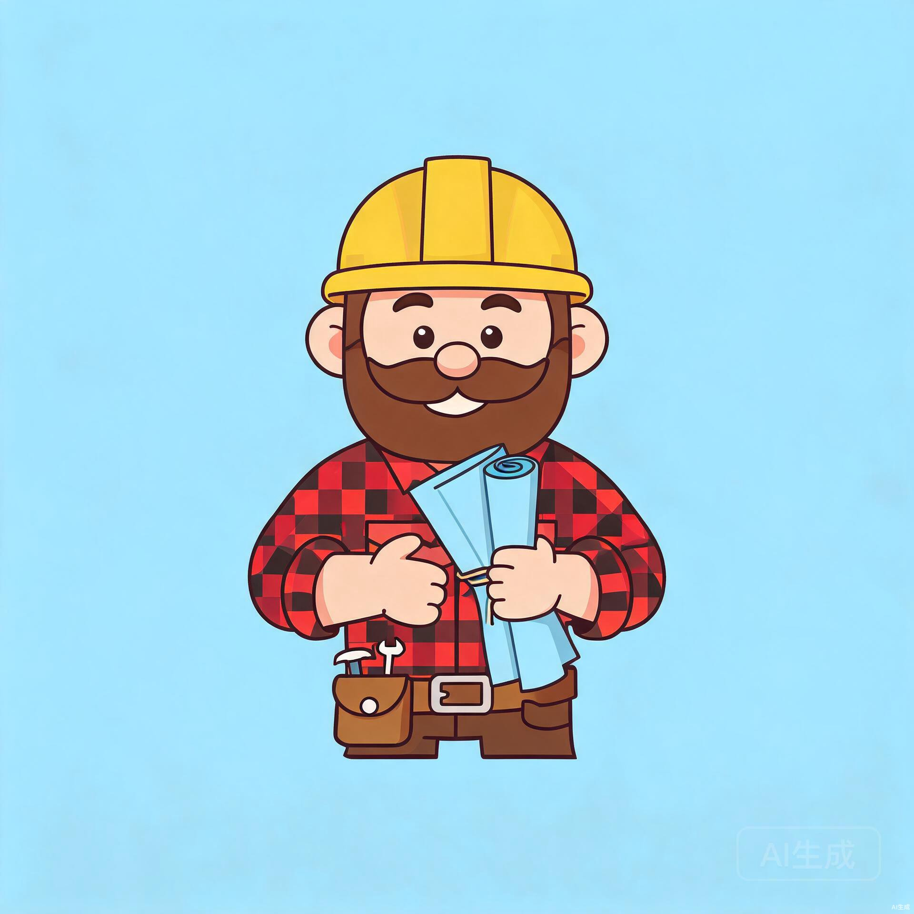
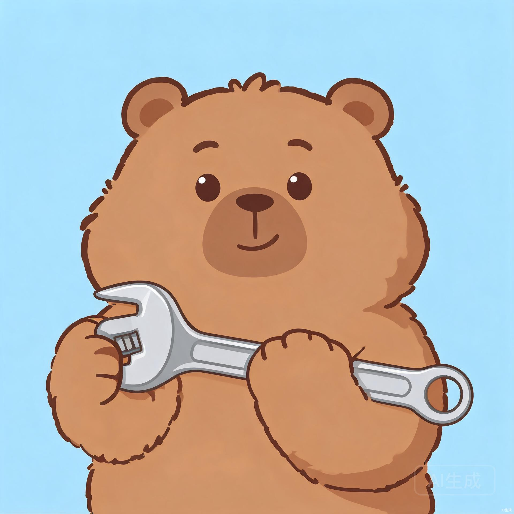
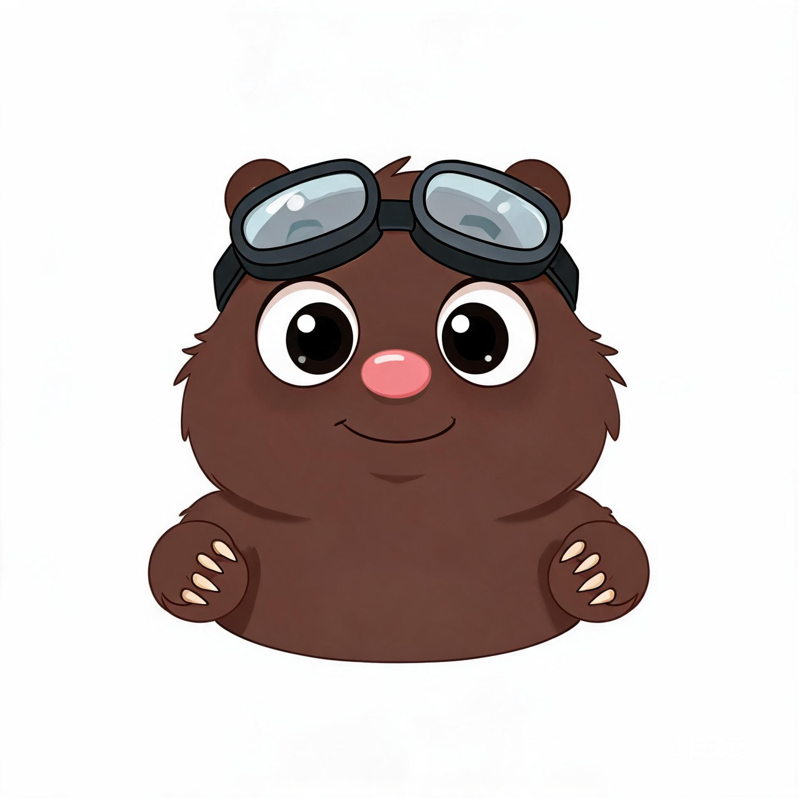
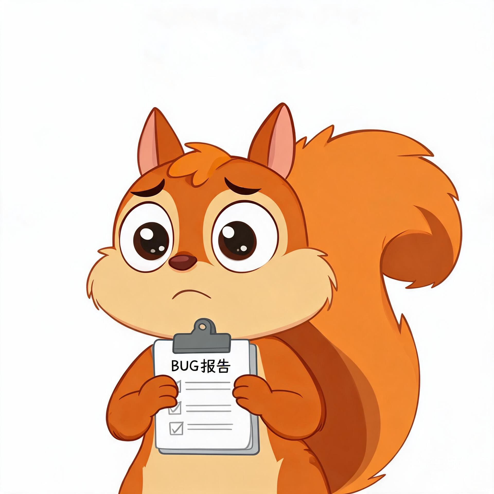
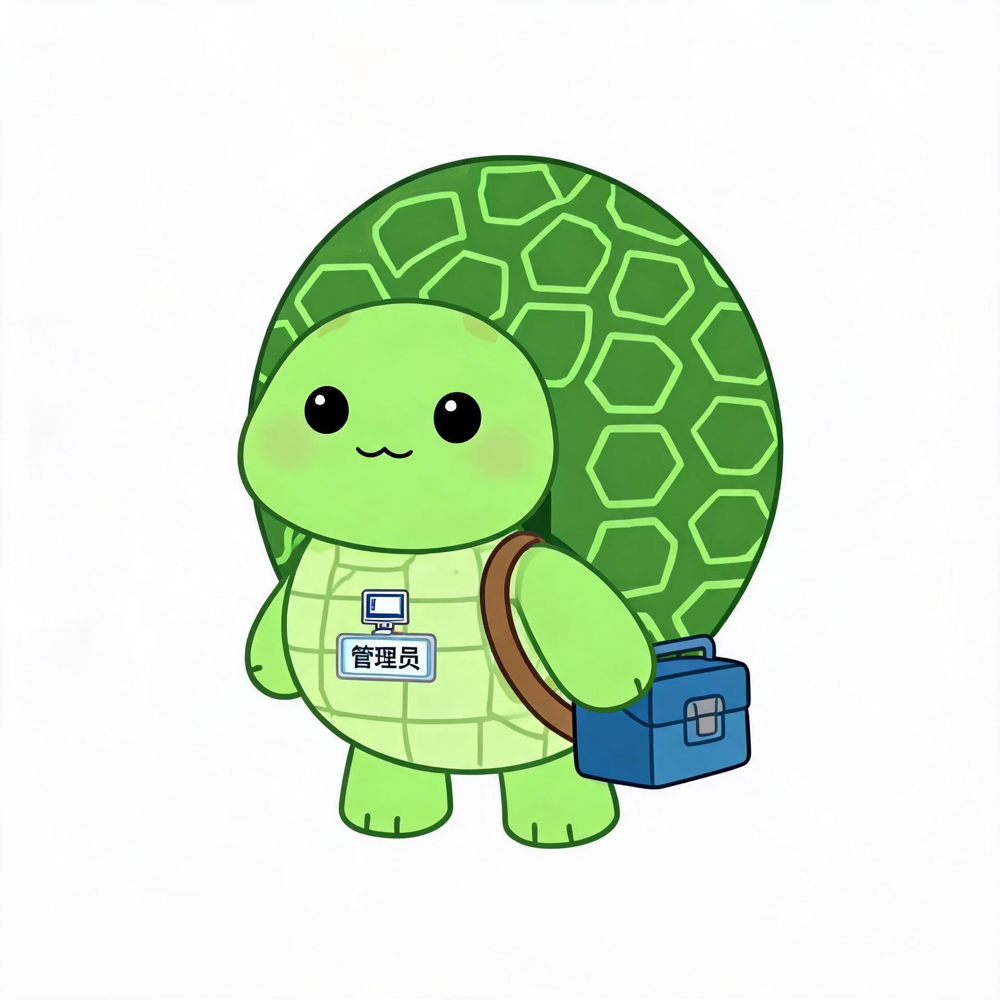
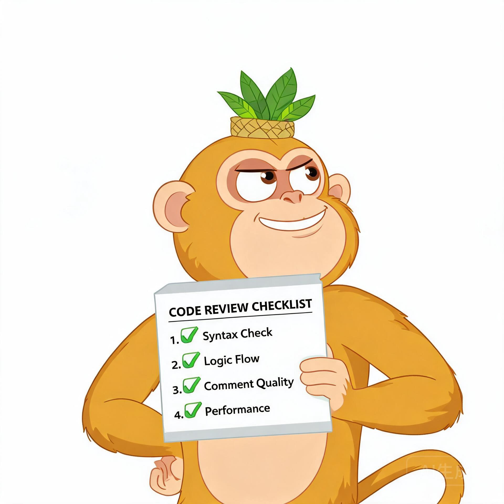
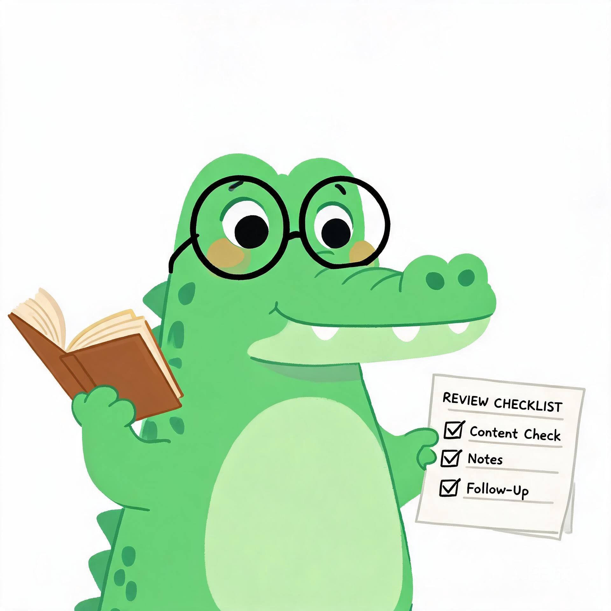

熊出没集团
MAVIS 式多 Agent 协作系统 — 需求说明书
01项目概述
1.1 项目背景
本项目的起点是一套已有的 Claude Code 多 Agent 体系——包含工程部、设计部、后勤部三个部门，12 个 Agent 角色和 15 个以上的 Skill。该体系的 Director（总监）接收用户需求后拆解任务、分配给团队成员执行，团队成员完成后再由 Director 汇报结果。这套体系已具备 Leader-Worker 的雏形，但缺少对抗式验证、并行执行和上下文隔离等关键能力。
2026 年 5 月，MiniMax 发布了 Mavis，其核心能力 Team Engine 将多 Agent 协作从 Prompt 编排的角色扮演提升为工程层面的状态机[1]。三层角色架构（Leader-Worker-Verifier）通过对抗式验证、上下文隔离和确定性约束，解决了单 Agent 模式下的"上下文焦虑"和"既当裁判又当选手"问题[2]。
熊出没集团的目标，是在 TRAE 平台上构建一套 MAVIS 式的多 Agent 协作系统，复用已有 Agent 和 Skill 资产，同时补齐对抗式验证、可配置验证流程和记忆学习机制。
1.2 设计目标
对抗式验证
Verifier 与 Worker 之间建立对抗关系，Verifier 有权驳回 Worker 的成果并强制重跑，用确定性约束根治模型随机性。
可配置验证
按任务复杂度选择验证强度：简单任务柔性审查，复杂任务强对抗验证，控制共识成本。
上下文隔离
每个 Worker 只接收与自身任务相关的信息摘要，不暴露全局上下文，减少串戏和漂移。
记忆与学习
任务完成后自动记录经验，将有效方案转化为参考模板，将常见问题模式转化为检查规则。
1.3 核心设计理念
传统多 Agent 本质上是 Prompt 编排的角色扮演——给模型一个角色描述，让它"演"项目经理或开发者。能不能演好，全看 Prompt 质量和模型当天的状态[1]。熊出没集团不依赖角色扮演，而是在系统架构层面做状态管理、上下文隔离和对抗式硬约束。
具体来说，Verifier 必须给出"通过/不通过"的判定；Worker 被驳回必须重跑；这些不是建议，而是机制约束。模型在工程设计的约束内发挥创造力，而非在开放空间里随机游走。
1.4 关键决策记录
以下五项决策在需求探讨阶段确定，作为本说明书的设计前提。
| 编号 | 决策项 | 选择 | 理由 |
|---|---|---|---|
| D1 | 运行环境 | 纯 TRAE 平台先行 | 利用 TRAE 的 Agent + Skill + MCP 快速跑通核心流程，产品稳定后接入 DeepSeek harness |
| D2 | 验证强度 | 可配置模式 | 简单任务柔性审查，复杂任务强对抗验证，不一刀切 |
| D3 | 并行策略 | 顺序为主 + 局部并行 | 主线顺序保证流程可控和成本可控，独立子任务才启用并行 |
| D4 | 需求范围 | 全覆盖 | 系统目标、架构、角色定义、验证流程、记忆机制、目录结构、实现计划、MVP 规划 |
| D5 | IM 集成 | 后续阶段，暂不实现 | 先聚焦核心 Team Engine，IM 集成作为 Phase 3 演进方向 |
02系统架构
2.1 三层角色架构
熊出没集团采用 MAVIS 的三层角色架构，将多 Agent 协作从"一个模型全干"拆分为"统筹-执行-验证"三个独立环节。
| 角色 | 人物名 | 职责 | 关键特征 |
|---|---|---|---|
| Leader | 熊大（总裁） | 接收用户需求、拆解任务、分配 Worker、监控进度、汇总结果 | 只动嘴不动手，可主动检查 Worker 状态，不参与具体执行 |
| Worker | 熊员工（9 种角色） | 执行具体子任务，产出交付物 | 上下文隔离，只管自己那摊活，不问全局 |
| Verifier | 熊质检（4 种角色） | 独立质检，审查 Worker 交付物的正确性、完整性和一致性 | 与 Worker 是对抗关系，通过/不通过判定，不负责执行 |
flowchart TB
User([用户])
Leader[熊大\nLeader 统筹层]
subgraph Workers [Worker 执行层]
direction LR
W1[光头强]
W2[熊二]
W3[萝卜头]
W4[蹦蹦]
W5[翠花]
W6[涂涂]
W7[拖拖]
W8[毛毛]
W9[肥波]
end
subgraph Verifiers [Verifier 验证层]
direction LR
V1[吉吉国王]
V2[老鳄]
V3[小狸]
V4[铁掌大师]
end
SkillLib[(Skill 工具库)]
Memory[(记忆系统)]
User -->|需求| Leader
Leader -->|分配任务| Workers
Workers -->|交付成果| Verifiers
Verifiers -->|通过| Leader
Verifiers -.->|驳回/需修改| Workers
Leader -->|汇总结果| User
Workers -.->|调用| SkillLib
Verifiers -.->|调用| SkillLib
Leader -.->|读写| Memory
2.2 TRAE 能力映射
熊出没集团在 TRAE 平台内实现，各层角色通过 TRAE 已有的工具和机制完成协作。
| TRAE 能力 | 系统用途 | 对应角色 |
|---|---|---|
| Agent 工具（subagent） | Leader 派发 Worker、并行执行、结果回收 | Leader + Worker |
| Skill 系统 | Worker 和 Verifier 调用技能（code-review、test-gen 等） | Worker + Verifier |
| MCP 工具 | 文件读写、Shell 执行、代码执行 | 全体角色 |
| 记忆系统（memory 目录） | 跨会话记忆、经验存储、项目规则 | Leader + 拖拖（运维） |
| Schedule 工具 | 定时任务、后台执行（Phase 3） | Leader |
| Lark 插件 | IM 集成、飞书秒回（Phase 3） | Leader |
2.3 与现有系统的关系
熊出没集团并非从零构建，而是将已有的 12 个 Agent 和 15 个以上的 Skill 重新编排到 MAVIS 式三层架构中。现有资产以"角色模板"和"工具库"的形式被新系统调用，格式不变，可双向迁移。
| 现有资产 | 数量 | 在新系统中的定位 |
|---|---|---|
| Agent 定义（.md frontmatter） | 12 个 | 转化为 Worker 和 Verifier 角色模板，按任务类型匹配调用 |
| Skill 定义（SKILL.md） | 15+ 个 | 直接作为 Worker 和 Verifier 的工具库 |
| 部门结构（departments/） | 3 个 | 转化为任务类型分类（工程/设计/运维） |
| codex-memory Skill | 1 个 | 增强为 Team Engine 的记忆层 |
| 工作流定义（CLAUDE.md） | 1 份 | 参考材料，新工作流由状态机驱动 |
现有 Agent 和 Skill 的定义文件保持原格式（Markdown frontmatter + SKILL.md），不做破坏性改动。新系统通过读取这些文件来加载角色模板和工具定义，实现资产复用。
03熊出没集团组织架构
3.1 集团架构总览
熊出没集团由 1 个 Leader、9 个 Worker 和 4 个 Verifier 组成，共 14 个角色。相比原有系统的 12 个 Agent，两个 Director（engineering-director 和 design-director）合并为一个统一的 Leader——熊大（总裁），根据任务类型自动切换调度策略。
flowchart TB
CEO[熊大\nLeader]
subgraph Worker层
W1[光头强\narchitect]
W2[熊二\nimplementer]
W3[萝卜头\ndebugger]
W4[蹦蹦\ntest-engineer]
W5[翠花\nui-designer]
W6[涂涂\nvisual-designer]
W7[拖拖\nsysadmin]
W8[毛毛\nresearch]
W9[肥波\ndocumentation]
end
subgraph Verifier层
V1[吉吉国王\ncode-reviewer]
V2[老鳄\ndesign-reviewer]
V3[小狸\ntest-lead]
V4[铁掌大师\nsecurity]
end
Skills[(Skill 工具库\n18+ skills)]
CEO --> Worker层
CEO --> Verifier层
Worker层 --> Skills
Verifier层 --> Skills
人物画廊
每个角色对应《熊出没》动画系列中的一个常驻人物，根据性格特征匹配职能。后续将基于这些人物形象构建"纸片人"工作模式——类似 MAVIS 的可视化 Agent 交互，每个 Worker/Verifier 以独立角色形象呈现，用户可直观看到哪个角色正在工作、等待验证或已完成。
Leader 统筹层
Worker 执行层





Verifier 验证层


纸片人工作模式（规划中）：后续实现时，每个角色将以 2D 卡通形象出现在工作面板中。用户下达任务后，可看到光头强在画图纸、熊二在敲代码、吉吉国王在挑毛病——不同角色处于"工作中/等待/已完成"等状态时，形象会有对应变化。这是 Phase 3 的演进方向。
3.2 Leader 角色 — 熊大（总裁）
熊大（总裁）是集团的唯一入口，所有用户需求首先到达这里。由原有的 engineering-director 和 design-director 合并演化而来，具备工程和设计两个领域的调度能力。
| 属性 | 定义 |
|---|---|
| 角色名 | 熊大（总裁）（Bear CEO） |
| 原始 Agent | engineering-director + design-director |
| 层级 | Leader 统筹层 |
| 核心职责 | 接收需求、澄清模糊、拆解任务、分配 Worker、监控进度、汇总结果、交付用户 |
| 可用工具 | Agent（派发 subagent）、Skill（全部）、MCP、Memory |
| 不做什么 | 不直接写代码、不直接做设计、不直接执行测试 |
任务分配决策树
收到需求
├─ 工程任务？
│ → 光头强（架构）出方案 → 熊二（开发）写代码 → 吉吉国王（代码质检）审查
│ → 小狸（质量门禁）定测试策略 → 蹦蹦（测试）写测试
│
├─ 设计任务？
│ → 涂涂（视觉）定义设计令牌 → 翠花（界面）设计布局和组件
│ → 老鳄（设计质检）审查 → 熊二（开发）实现
│
├─ Bug 修复？
│ → 萝卜头（调试）排查根因 → 熊二（开发）修复
│ → 蹦蹦（测试）写回归测试 → 吉吉国王（代码质检）审查修复
│
├─ 调研任务？
│ → 毛毛（调研）做市场/技术/竞品调研，输出报告
│
├─ 文档任务？
│ → 肥波（文档）编写技术文档/用户手册/知识库
│
├─ 运维任务？
│ → 拖拖（运维）处理（环境/记忆/备份）
│
└─ 混合任务？
→ 先工程后设计，或并行调度两个领域3.3 Worker 角色库 — 执行层
9 个 Worker 各有专长，由熊大（总裁）根据任务类型匹配调度。每个 Worker 只接收与自身任务相关的信息摘要，不暴露全局上下文。
| 人物名 | 原始 Agent | 专长 | 可用 Skill | 典型任务 |
|---|---|---|---|---|
| 光头强（架构） | architect | 技术方案设计、架构选型、项目结构规划 | scaffold, dependency-check | 新项目搭骨架、技术选型评估 |
| 熊二（开发） | implementer | 功能代码实现、单元测试编写 | test-gen, scaffold | 写功能代码、写测试 |
| 萝卜头（调试） | debugger | 运行时错误排查、Bug 根因定位、修复方案 | git-changelog, dependency-check | 排查报错、定位 bug、追溯变更 |
| 蹦蹦（测试） | test-engineer | 测试用例编写、测试执行、Bug 报告提交 | test-gen, bug-report | 生成测试用例、执行测试套件、提交 Bug |
| 翠花（界面） | ui-designer | 页面布局、组件规格、交互原型、无障碍设计 | design-system | 设计页面线框图、定义组件规格 |
| 涂涂（视觉） | visual-designer | 配色方案、字体体系、图标规范、设计令牌 | design-system | 定义配色和字体、注册设计令牌 |
| 拖拖（运维） | sysadmin | 环境配置、数据备份、跨会话记忆管理 | codex-memory | 检查环境、备份记忆、清理缓存 |
| 毛毛（调研） | 新建（无原始 Agent） | 市场调研、技术选型、竞品分析、可行性研究 | research-guide, WebSearch, WebFetch | 技术选型评估、竞品功能对比、可行性报告 |
| 肥波（文档） | 新建（从 implementer 拆出） | 技术文档、API 文档、用户手册、知识库维护 | doc-gen | 生成 API 文档、编写用户手册、维护知识库 |
3.4 Verifier 角色 — 验证层
4 个 Verifier 独立于 Worker 运作，专门挑 Worker 的毛病。Verifier 与 Worker 之间是对抗关系，不是协作关系——Verifier 说不过关，Worker 就得回去改。
| 人物名 | 原始 Agent | 验证维度 | 可用 Skill | 验证标准 |
|---|---|---|---|---|
| 吉吉国王（代码质检） | code-reviewer | 正确性、安全性、性能、编码规范 | code-review | 无高危问题、无注入风险、无性能瓶颈 |
| 老鳄（设计质检） | design-reviewer | 视觉一致性、无障碍、响应式、状态完整性 | design-review | 对比度达标、WCAG 合规、断点布局正确 |
| 小狸（质量门禁） | test-lead | 测试覆盖率、质量标准、发布门禁 | test-gen, bug-report, code-review | 单元覆盖率 >= 80%、0 失败用例、无高危 Bug |
| 铁掌大师（安全） | 新建（无原始 Agent） | 深度安全审计、依赖漏洞分析、合规检查 | code-review, building-secure-contracts, semgrep, dependency-check | 无高危漏洞、依赖 CVE 清零、合规检查通过 |
关键区别：原有的 code-reviewer 和 design-reviewer 是"建议性审查"——发现问题后提报告，修不修由 Director 决定。新的 Verifier 拥有"否决权"——在强对抗模式下，Verifier 说不过关，Worker 必须重跑，这是机制约束而非建议。
3.5 Skill 工具库
现有的 15 个以上 Skill 全部保留，另新增 3 个角色对应的工具引用，作为 Worker 和 Verifier 的工具库。Leader 本身不直接调用 Skill，但可以指示 Worker 或 Verifier 在执行过程中使用特定 Skill。
| Skill | 调用方 | 用途 |
|---|---|---|
| code-review | 吉吉国王（代码质检） | 四维度代码审查（正确性/安全/性能/规范） |
| test-gen | 蹦蹦（测试）、小狸（质量门禁） | 分析源码并生成测试用例 |
| scaffold | 光头强（架构）、熊二（开发） | 按项目类型生成标准目录结构 |
| git-changelog | 萝卜头（调试） | 分析 commit 历史生成 CHANGELOG |
| dependency-check | 光头强（架构）、萝卜头（调试） | 依赖安全漏洞和版本检查 |
| doc-gen | 肥波（文档） | 从代码注释生成 API 文档 |
| research-guide | 毛毛（调研） | 市场调研、技术选型、竞品分析研究方法论 |
| building-secure-contracts | 铁掌大师（安全） | 合约安全审计规则集 |
| semgrep | 铁掌大师（安全） | 多语言静态安全扫描 |
| supply-chain-risk-auditor | 铁掌大师（安全） | 供应链依赖风险评估 |
| bug-report | 蹦蹦（测试）、小狸（质量门禁） | 结构化 Bug 报告 |
| design-review | 老鳄（设计质检） | Dieter Rams 十原则审查 UI |
| design-system | 翠花（界面）、涂涂（视觉） | 管理设计令牌和组件库 |
| codex-memory | 拖拖（运维） | 跨会话长期记忆（JSONL 存储） |
| full-output | 熊二（开发） | 强制完整输出，禁止占位符 |
3.6 现有资产映射总表
| 原始 Agent | 新角色 | 层级 | 人物名 | 变化说明 |
|---|---|---|---|---|
| engineering-director | Leader | 统筹层 | 熊大（总裁） | 与 design-director 合并 |
| design-director | Leader | 统筹层 | 熊大（总裁） | 合并到熊大（总裁） |
| architect | Worker | 执行层 | 光头强（架构） | 角色不变 |
| implementer | Worker | 执行层 | 熊二（开发） | 角色不变 |
| debugger | Worker | 执行层 | 萝卜头（调试） | 角色不变 |
| test-engineer | Worker | 执行层 | 蹦蹦（测试） | 角色不变 |
| ui-designer | Worker | 执行层 | 翠花（界面） | 角色不变 |
| visual-designer | Worker | 执行层 | 涂涂（视觉） | 角色不变 |
| sysadmin | Worker | 执行层 | 拖拖（运维） | 角色不变 |
| code-reviewer | Verifier | 验证层 | 吉吉国王（代码质检） | 从建议性审查升级为对抗式验证 |
| design-reviewer | Verifier | 验证层 | 老鳄（设计质检） | 从建议性审查升级为对抗式验证 |
| test-lead | Verifier | 验证层 | 小狸（质量门禁） | 从测试组长升级为质量门禁 Verifier |
| 新建 | Worker | 执行层 | 毛毛（调研） | 新建角色，使用 research-guide 技能 |
| 从 implementer 拆出 | Worker | 执行层 | 肥波（文档） | 新建角色，接管文档职责 |
| 新建 | Verifier | 验证层 | 铁掌大师（安全） | 新建角色，调度现有安全审计 Skill |
04验证流程与工作流
4.1 任务接收与拆解
用户向熊大（总裁）发出需求后，总裁执行以下流程：
- 理解需求 — 用 1-2 句话概括用户要什么，模糊处先问用户
- 分类任务 — 判断任务类型（工程/设计/运维/混合）和复杂度（简单/中等/复杂）
- 拆解任务 — 将大需求拆为可执行的子任务，标注依赖关系
- 匹配角色 — 根据子任务类型匹配 Worker 和 Verifier
- 选择验证级别 — 根据复杂度选择柔性/标准/强对抗验证
- 生成任务清单 — 输出包含步骤、执行人、产出、依赖的表格
4.2 Worker 执行流程
熊大（总裁）通过 TRAE 的 Agent 工具派发 Worker subagent。每个 Worker subagent 在隔离的上下文中执行，只接收任务相关的信息摘要。
上下文隔离的实现方式：Leader 在派发 Worker 时，只传递该 Worker 执行任务所需的上下文（任务描述、相关文件路径、前序步骤的产出摘要），不传递全局对话历史或其他 Worker 的内部状态。Worker 完成后将产出摘要返回给 Leader，由 Leader 决定是否传递给下一个环节。
4.3 可配置验证流程
根据决策 D2，验证强度按任务复杂度可配置，分为三个级别。
flowchart LR
subgraph L1 [Level 1 柔性审查 - 简单任务]
direction TB
A1[Verifier 审查] --> A2[提建议]
A2 --> A3[Worker 修复]
A3 --> A4[复审通过]
end
subgraph L2 [Level 2 标准验证 - 中等任务]
direction TB
B1[Verifier 独立检查] --> B2{通过?}
B2 -->|是| B4[完成]
B2 -->|需修改| B3[Worker 修复]
B3 --> B1
end
subgraph L3 [Level 3 强对抗验证 - 复杂任务]
direction TB
C1[Verifier 独立检查] --> C2{通过?}
C2 -->|是| C4[终审通过]
C2 -->|驳回| C3[Worker 重跑]
C3 --> C1
C2 -->|达上限| C5[终审失败]
end
| 级别 | 适用场景 | Verifier 权力 | 驳回后果 | 最大迭代 | 成本 |
|---|---|---|---|---|---|
| Level 1 柔性 | 小改动、文档更新、配置调整 | 提建议，不否决 | Worker 可选修复 | 1 次复审 | 低 |
| Level 2 标准 | 新功能、模块开发、Bug 修复 | 有修改建议权，可标记"需修改" | Worker 必须修复后复审 | 2 次复审 | 中 |
| Level 3 强对抗 | 架构变更、核心模块重写、发布前审查 | 有否决权，可强制驳回 | Worker 必须重跑 | 3 次重跑 | 高 |
熊大（总裁）根据以下规则自动选择验证级别，用户也可手动指定。
验证级别选择规则：
任务涉及架构变更 or 核心模块重写 or 发布前 → Level 3 强对抗
任务涉及新功能 or Bug 修复 or 模块开发 → Level 2 标准
任务是小改动 or 文档更新 or 配置调整 → Level 1 柔性
用户显式指定级别 → 按用户指定4.4 驳回重跑机制
在 Level 2 和 Level 3 验证中，Verifier 驳回 Worker 后触发重跑流程。驳回时必须附带具体反馈——指出哪个文件、哪一行、什么问题、期望什么结果。Worker 收到驳回后重跑，产出更新后的交付物再次提交验证。
防死循环约束：Level 3 强对抗验证设最大迭代 3 次。超过 3 次仍未通过，Verifier 输出"终审失败"报告，熊大（总裁）将问题升级给用户决策，不再自动重跑。这避免了 Verifier 和 Worker 之间无限对抗导致的成本失控。
4.5 任务状态机
整个任务流程由状态机驱动，而非 Prompt 编排。每个任务在任何时刻都处于一个确定的状态，状态之间的转换由明确的条件触发。
stateDiagram-v2
[*] --> 待处理
待处理 --> 已拆解: Leader接收并拆解
已拆解 --> 执行中: 分配Worker
执行中 --> 待验证: Worker完成交付
待验证 --> 已完成: Verifier通过
待验证 --> 修复中: 柔性或标准-需修改
待验证 --> 重跑中: 强对抗-驳回
修复中 --> 待验证: Worker修复完成
重跑中 --> 待验证: Worker重跑完成
待验证 --> 已失败: 达最大迭代次数
已完成 --> [*]
已失败 --> [*]
4.6 并行执行策略
根据决策 D3，主线任务按顺序执行，只在遇到独立子任务时才启用并行 Worker。熊大（总裁）在拆解任务时标注每个子任务的依赖关系，无依赖的子任务可并行派发。
| 场景 | 策略 | 示例 |
|---|---|---|
| 有依赖的子任务 | 顺序执行 | 光头强（架构）出方案 → 熊二（开发）写代码（开发依赖架构方案） |
| 无依赖的独立子任务 | 并行执行 | 涂涂（视觉）定义配色 + 翠花（界面）设计布局（两者独立） |
| 多个验证维度 | 并行验证 | 吉吉国王（代码质检） + 老鳄（设计质检） 同时审查（不同维度） |
| 调研类子任务 | 并行执行 | 多个 Worker 各自调研不同技术方案 |
4.7 典型工作流
工作流 A：新功能开发（Level 2 标准验证）
用户: "给项目加一个用户注册功能"
↓
熊大（总裁）:
1. 拆解: [设计方案] → [写代码] → [写测试] → [代码审查] → [测试验证]
2. 分配:
→ 光头强（架构）: 设计注册功能的技术方案
→ 熊二（开发）: 实现注册 API + 前端表单 (依赖: 步骤1)
→ 蹦蹦（测试）: 编写注册流程测试用例 (依赖: 步骤2)
→ 吉吉国王（代码质检）: 审查代码 (依赖: 步骤2)
→ 小狸（质量门禁）: 检查测试覆盖率 (依赖: 步骤3,4)
3. 验证: Level 2 标准验证
4. 汇总结果交付用户工作流 B：Bug 修复（Level 2 标准验证）
用户: "登录页面点击按钮没反应"
↓
熊大（总裁）:
1. 拆解: [排查根因] → [修复代码] → [回归测试] → [代码审查]
2. 分配:
→ 萝卜头（调试）: 定位 bug 根因，输出修复方案
→ 熊二（开发）: 按方案修复代码 (依赖: 步骤1)
→ 蹦蹦（测试）: 写回归测试 (依赖: 步骤2)
→ 吉吉国王（代码质检）: 审查修复 (依赖: 步骤2)
3. 验证: Level 2 标准验证
4. 汇总结果交付用户工作流 C：发布前审查（Level 3 强对抗验证）
用户: "准备发布 v2.0，做全面检查"
↓
熊大（总裁）:
1. 拆解: [全量代码审查] + [全量测试] + [依赖安全检查] → [质量门禁]
2. 并行分配:
→ 吉吉国王（代码质检）: 全量代码审查 (code-review skill)
→ 小狸（质量门禁）: 全量测试执行 + 覆盖率检查
→ 萝卜头（调试）: 依赖安全检查 (dependency-check skill)
3. 验证: Level 3 强对抗验证
- Verifier 独立检查，不通过则驳回重跑
- 最大迭代 3 次
4. 小狸（质量门禁）终审: 通过/不通过
5. 汇总报告交付用户4.8 复杂度评估与快速通道
MAVIS 明确说过：Agent Team 不是默认选项，它是为复杂任务准备的[1]。熊大（总裁）在拆解任务之前先做复杂度评估，简单任务直接走快速通道，不派 Worker、不走验证。
| 维度 | 简单 | 中等 | 复杂 |
|---|---|---|---|
| 涉及文件数 | 1-2 个 | 3-5 个 | 5+ 个 |
| 任务类型 | 文案/配置/拼写 | 功能/Bug | 架构/发布 |
| 影响范围 | 单文件 | 单模块 | 跨模块 |
| 执行方式 | 总裁直接处理 | Worker + Level 1-2 | Worker + Level 3 |
| 派发 subagent | 0 个 | 1-5 个 | 5-15 个 |
用户也可手动指定："这个简单处理"就走快速通道，"这个仔细查"就强制 Level 3 强对抗验证。快速通道下，熊大（总裁）直接用 Read/Edit/Write 完成任务，不消耗 subagent 配额。
4.9 成本控制机制
TRAE 不一定暴露精确的 token 消耗数，因此用 subagent 数量和验证迭代次数作为代理指标。
| 约束项 | 简单任务 | 中等任务 | 复杂任务 |
|---|---|---|---|
| 最大 subagent 数 | 0（总裁直干） | 5 | 15 |
| 最大验证轮次 | 1 | 2 | 3 |
| 最大重跑次数 | 0 | 1 | 3 |
| 单任务硬上限 | — | — | 20 个 subagent |
超限处理：subagent 数达上限时，熊大（总裁）暂停派发，输出当前进度和原因，问用户是否追加预算。验证轮次达上限时，Verifier 输出"终审失败"报告并升级用户。约束值写在 config/team-engine.json 中，可配置调整。
4.10 错误恢复策略
熊大（总裁）在派发 Worker subagent 后检测三种异常，分别采取不同的恢复策略。
| 异常类型 | 检测方式 | 恢复策略 |
|---|---|---|
| 执行失败 | subagent 返回错误信息 | 首次重试 1 次；仍失败则换角色重试（如熊二（开发）失败换萝卜头（调试）） |
| 超时 | 预设超时阈值（120 秒）无返回 | 终止当前 Worker，标记"超时失败"，重试或换角色 |
| 产出异常 | 产出为空、格式不符或明显错误 | 交给 Verifier 判断是否可用；不可用则重跑 |
多次失败约束：同一子任务失败 3 次以上，熊大（总裁）停止重试，将失败原因和建议方案升级给用户决策。TRAE 的 Agent 工具支持 timeout 参数（最大 600 秒）和 run_in_background 参数。长任务用后台模式执行，Leader 可继续处理其他子任务，之后用 TaskOutput 回收结果——这是与 MAVIS 的 Leader"主动开终端查状态"最接近的 TRAE 能力。
4.11 任务优先级队列
用户可能连续发多个任务，熊大（总裁）维护一个三级优先级队列，决定执行顺序。
| 级别 | 触发条件 | 行为 |
|---|---|---|
| P0 紧急 | 用户标记"紧急"或涉及线上故障 | 立即执行，可请求打断当前任务 |
| P1 常规 | 普通开发任务 | 按顺序排队 |
| P2 后台 | 调研、文档、维护类任务 | 空闲时执行，可用 Schedule 定时触发 |
Phase 1-2 的现实约束：TRAE 单会话是单线程的，同一时刻只能跑一个任务链。因此优先级队列在 Phase 1-2 本质上是排序——决定先做哪个后做哪个，而不是真正并行多个任务。真正的多任务并行需要多会话或 IM 集成（Phase 3）。熊大（总裁）在会话记忆中维护任务队列，每次开始时取最高优先级任务执行。
05记忆系统与学习机制
5.1 记忆存储结构
熊出没集团的记忆系统基于 TRAE 已有的 memory 目录结构，分三层存储不同粒度的信息。
| 记忆层 | 存储位置 | 内容 | 生命周期 | 读写者 |
|---|---|---|---|---|
| 会话记忆 | session_memory_*.jsonl | 当前任务的上下文、中间产出、Worker 状态 | 单次任务 | 熊大（总裁）（读写）、拖拖（运维）（归档） |
| 项目记忆 | project_memory.md | 项目规则、约束、约定、技术栈选择 | 跨会话持久 | 熊大（总裁）（读写）、拖拖（运维）（维护） |
| 经验记忆 | topics.md + experience.jsonl | 任务完成后的经验总结、常见问题模式、有效方案模板 | 跨会话持久 | 熊大（总裁）（写入）、全体角色（读取） |
5.2 经验记录机制
每次任务完成后，熊大（总裁）自动生成一份经验记录并写入经验记忆层。记录内容包括：
- 任务类型和复杂度
- 拆解策略和 Worker 分配方案
- 验证级别和验证结果（通过/驳回次数）
- 遇到的典型问题和解决方案
- Verifier 发现的常见问题模式
- Worker 使用的有效解决方案
经验记录的目的是让集团"越长越聪明"。下次遇到类似任务时，熊大（总裁）会先检索经验记忆，参考历史方案来优化拆解策略和角色分配，避免重复犯错。
5.3 Skill 更新机制
经验记忆积累到一定程度后，可以转化为新的 Skill 或更新现有 Skill 定义。转化规则如下：
| 经验类型 | 转化方向 | 触发条件 |
|---|---|---|
| Verifier 发现的常见问题模式 | 更新对应 Skill 的检查规则 | 同一问题模式出现 3 次以上 |
| Worker 的有效解决方案 | 记录为参考模板 | 方案被验证通过且可复用 |
| 新的检查维度 | 创建新 Skill | 现有 Skill 无法覆盖的检查场景 |
| 任务拆解模式 | 更新熊大（总裁）的决策树 | 某类任务的拆解方案稳定有效 |
06目录结构
熊出没集团的项目文件存放在 d:\TRAE SOLO CN\data\熊出没集团\ 目录下，按照职责分层组织。
d:\TRAE SOLO CN\data\熊出没集团\
├── requirements-spec/ # 需求说明书（本文件）
│ ├── requirements-spec.html # 需求说明书 HTML
│ ├── assets/ # 图片和图表资源
│ └── _shared/ # 共享 JS 和字体
├── config/ # 系统配置
│ ├── team-engine.json # Team Engine 核心配置
│ ├── verification-rules.json # 验证规则配置
│ ├── memory-config.json # 记忆系统配置
│ └── cost-control.json # 成本控制（subagent上限、迭代上限）
├── roles/ # 角色定义（从现有 Agent 演化）
│ ├── leader/ # Leader 角色模板
│ │ └── bear-ceo.md # 熊大（总裁）定义
│ ├── workers/ # Worker 角色模板
│ │ ├── architect-bear.md # 光头强（架构）
│ │ ├── implementer-bear.md # 熊二（开发）
│ │ ├── debugger-bear.md # 萝卜头（调试）
│ │ ├── test-engineer-bear.md# 蹦蹦（测试）
│ │ ├── ui-designer-bear.md # 翠花（界面）
│ │ ├── visual-designer-bear.md # 涂涂（视觉）
│ │ ├── sysadmin-bear.md # 拖拖（运维）
│ │ ├── research-bear.md # 毛毛（调研）
│ │ └── documentation-bear.md # 肥波（文档）
│ └── verifiers/ # Verifier 角色模板
│ ├── code-reviewer-bear.md # 吉吉国王（代码质检）
│ ├── design-reviewer-bear.md # 老鳄（设计质检）
│ ├── test-lead-bear.md # 小狸（质量门禁）
│ └── security-bear.md # 铁掌大师（安全）
├── skills/ # Skill 工具库（复用现有）
│ ├── engineering/ # 工程类 Skill
│ ├── design/ # 设计类 Skill
│ └── logistics/ # 运维类 Skill
├── memory/ # 记忆系统
│ ├── session/ # 会话记忆（JSONL）
│ ├── project_memory.md # 项目记忆
│ └── experience/ # 经验记忆
│ ├── topics.md # 主题索引
│ └── experience.jsonl # 经验记录
└── README.md # 项目说明roles/ 目录下的角色定义文件保持与现有 Agent 相同的 Markdown frontmatter 格式（name、description、tools、model、color），确保与 Claude Code 的兼容性。新增的 MAVIS 式字段（如 role_type、verification_level、max_iterations）通过扩展字段添加，不破坏原有格式。
07实现计划
7.1 Phase 1 — MVP 最小可用版本
Phase 1 的目标是跑通 Leader → Worker → Verifier 的基本流程，验证三层架构在 TRAE 中的可行性。
| 项目 | MVP 范围 | 不在 MVP 中 |
|---|---|---|
| Leader | 熊大（总裁）接收需求、拆解、顺序分配 | 并行调度、状态机 |
| Worker | 光头强、熊二（2 个核心角色） | 全部 9 个 Worker |
| Verifier | 吉吉国王（1 个验证角色） | 全部 4 个 Verifier |
| 快速通道 | 简单任务总裁直接处理 | 成本控制、错误恢复、优先级队列 |
| 验证级别 | Level 1 柔性审查 | Level 2 标准、Level 3 强对抗 |
| 并行 | 不支持，纯顺序 | 局部并行 |
| 记忆 | 会话级记忆（任务上下文） | 项目记忆、经验记忆 |
| Skill | scaffold、code-review、test-gen（3 个核心 Skill） | 全部 18+ Skill |
MVP 验收标准
- 熊大（总裁）能接收用户需求并输出任务拆解表
- 简单任务（改文案/修拼写）能走快速通道，总裁直接完成不派 Worker
- 能通过 Agent 工具派发 Worker subagent 执行任务
- 吉吉国王（代码质检）能对 Worker 产出进行审查并输出审查报告
- 熊大（总裁）能汇总所有 Worker 产出并交付用户
- 会话级记忆能记录任务上下文，支持同会话内追问
7.2 Phase 2 — 完整版
Phase 2 在 MVP 基础上补齐全部能力，实现完整的 Team Engine。
| 项目 | Phase 2 范围 |
|---|---|
| Leader | 状态机驱动、并行调度、主动监控 Worker 状态 |
| Worker | 全部 9 个 Worker 角色 |
| Verifier | 全部 4 个 Verifier 角色 |
| 验证级别 | 三级可配置（柔性/标准/强对抗） |
| 并行 | 局部并行（独立子任务并行执行） |
| 记忆 | 三层记忆系统（会话/项目/经验） |
| Skill | 全部 18+ Skill 集成 |
| 学习 | 经验记录 + Skill 更新机制 |
| 快速通道 | 复杂度评估 + 简单任务总裁直干 |
| 成本控制 | subagent 上限 + 验证迭代上限 + 超限暂停 |
| 错误恢复 | 超时检测 + 失败重试 + 换角色重试 + 升级用户 |
| 优先级队列 | P0/P1/P2 三级排序（真正并行需 Phase 3） |
Phase 2 验收标准
- 全部 14 个角色可按任务类型自动匹配调度
- 复杂度评估正确分类简单/中等/复杂，简单任务走快速通道不派 Worker
- 三级验证流程可按复杂度自动选择或用户指定
- 独立子任务可并行执行，有依赖的子任务顺序执行
- 任务状态机正确驱动流程流转（待处理→已拆解→执行中→待验证→完成/失败）
- 强对抗验证的驳回重跑机制工作正常，最大迭代 3 次后升级用户
- 三层记忆系统正常读写，跨会话经验可检索复用
- 成本控制生效：subagent 数和验证迭代达上限时暂停并通知用户
- 错误恢复工作：Worker 超时或失败时自动重试或换角色，3 次失败后升级用户
- 优先级队列工作：P0 任务可插队，P2 任务排队不阻塞 P1
7.3 Phase 3 — 后续演进
Phase 3 在核心 Team Engine 稳定后，扩展运行环境和交互通道。详见第八章。
08后续演进方向
8.1 DeepSeek Harness 接入
根据决策 D1，产品稳定后接入 DeepSeek 作为独立执行引擎（harness）。接入后，Worker 和 Verifier 的执行可以切换到 DeepSeek 模型，与 TRAE 内置模型形成双引擎架构。
接入目标
Worker/Verifier 可选择在 DeepSeek 或 TRAE 内置模型上执行，Leader 根据任务类型和成本选择引擎。
接入方式
DeepSeek 作为 harness 独立运行，通过 API 与 TRAE 的 Leader 通信，接收任务、返回产出。
前置条件
Phase 2 完整版稳定运行，角色定义和 Skill 接口标准化，DeepSeek API 可用。
8.2 IM 集成（飞书秒回 + 后台执行）
根据决策 D5，IM 集成作为后续阶段写入需求说明书，暂不实现。MAVIS 的 IM 集成将"秒回"和"执行"解耦——用户发任务后系统秒回"收到，开始"，然后后台默默跑[1]。TRAE 已有 Lark 插件，具备实现条件。
| 能力 | 说明 | 依赖 |
|---|---|---|
| 飞书接收任务 | 用户在飞书聊天中发消息，系统解析为任务 | Lark IM Skill |
| 秒回确认 | 收到任务后立即回复"收到，开始执行"，不等任务跑完 | Lark IM Skill |
| 后台执行 | 任务在后台异步执行，用户可继续发新任务 | Schedule 工具 |
| 进度推送 | 关键节点（开始/阻塞/完成）主动推送消息给用户 | Lark IM Skill |
| 多任务并行 | 用户可连续发多个任务，每个任务独立上下文互不干扰 | 上下文隔离机制 |
IM 集成是 Team Engine 之上的通道层，不是核心引擎的一部分。没有引擎，IM 集成没有东西可跑；有了引擎，IM 集成只是增加一个收发任务的入口。因此 IM 集成排在 Phase 3，在核心引擎稳定后再实现。